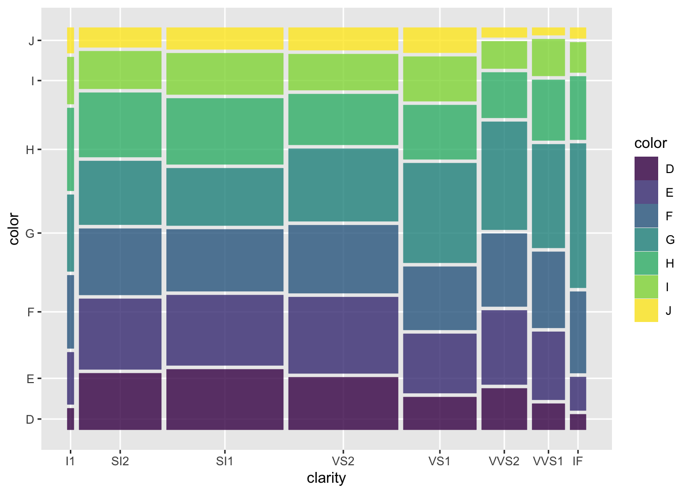
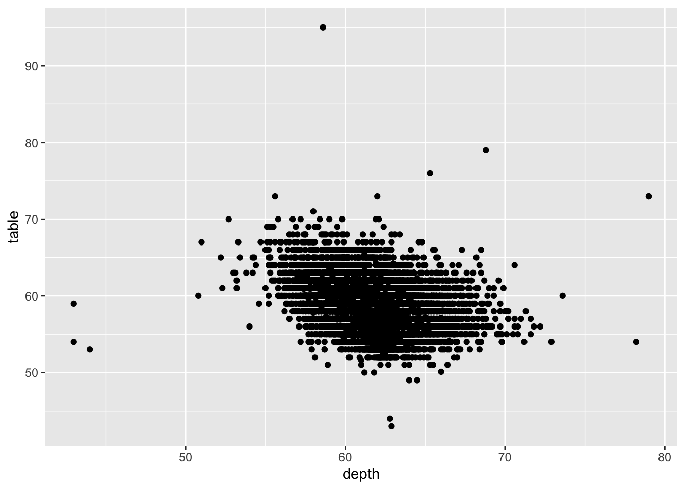
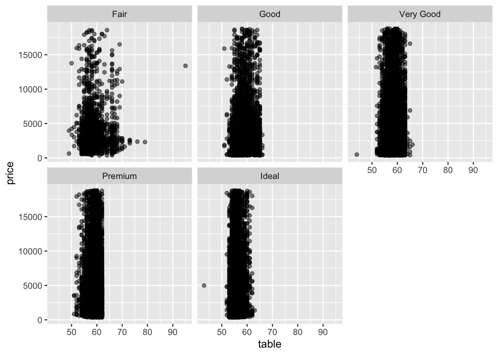
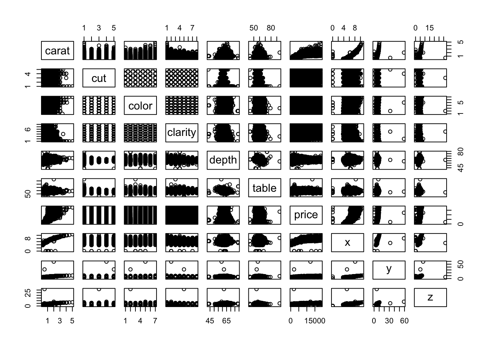
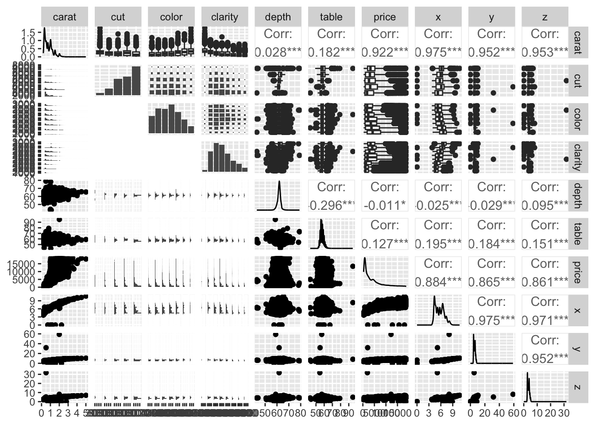

library(tidyverse) #라이브러리 로드
library(ggmosaic)
library(GGally)Diamonds
다이아몬드 데이터셋을 조회합니다.
diamonds# A tibble: 53,940 × 10
carat cut color clarity depth table price x y z
<dbl> <ord> <ord> <ord> <dbl> <dbl> <int> <dbl> <dbl> <dbl>
1 0.23 Ideal E SI2 61.5 55 326 3.95 3.98 2.43
2 0.21 Premium E SI1 59.8 61 326 3.89 3.84 2.31
3 0.23 Good E VS1 56.9 65 327 4.05 4.07 2.31
4 0.29 Premium I VS2 62.4 58 334 4.2 4.23 2.63
5 0.31 Good J SI2 63.3 58 335 4.34 4.35 2.75
6 0.24 Very Good J VVS2 62.8 57 336 3.94 3.96 2.48
7 0.24 Very Good I VVS1 62.3 57 336 3.95 3.98 2.47
8 0.26 Very Good H SI1 61.9 55 337 4.07 4.11 2.53
9 0.22 Fair E VS2 65.1 61 337 3.87 3.78 2.49
10 0.23 Very Good H VS1 59.4 61 338 4 4.05 2.39
# ℹ 53,930 more rows53,940행, 10열의 크기이므로 총 539,400개의 데이터를 갖고 있습니다.
각 열(컬럼)은 아래와 같습니다.
참고 : https://blog.naver.com/ss1ca/221592449859
carat(캐럿) : 다이아몬드의 무게를 나타내는 단위 (소수점 단위로 표시)
cut(컷) : 다이아몬드의 광채와 반짝임 정도
- “Fair” (공정)
“Good” (좋음)
“Very Good” (매우 좋음)
“Premium” (프리미엄)
“Ideal” (이상적)
color(컬러) : 다이아몬드의 색상이 무색에 가까울수록 가치가 높음
“D” (무색)
“E” (무색)
“F” (무색)
“G” (무색에 가까움)
“H” (무색에 가까움)
“I” (무색에 가까움)
“J” (가장 색상이 진함)
clarity(클래러티) : 투명도로서 내포물(내부 결함)과 결점(외부 결함)의 정도를 표현
“I1” (포함된 결함)
“SI2” (약간의 내부적 특징이 있음2)
“SI1” (약간의 내부적 특징이 있음1)
“VS2” (미세한 내부적 특징이 있음)
“VS1” (미세한 내부적 특징이 있음1)
“VVS2” (아주 미세한 내부적 특징이 있음2)
“VVS1” (아주 미세한 내부적 특징이 있음1)
“IF” (다이아몬드에 내부적 특징은 없으나 극히 미세한 외부적 특징이 있음)
depth(깊이 비율) : 다이아몬드의 전체 높이와 테이블 너비의 비율
- 계산 방식 : (z / 평균(x, y)) * 100
table(테이블 비율) : 다이아몬드의 상단 평면(테이블)의 너비를 나타내는 비율
price(가격) : 다이아몬드 가격
x(길이) : 다이아몬드의 길이
y(높이) : 다이아몬드의 높이
z(깊이) : 다이아몬드의 깊이
diamonds |>
ggplot(aes(x = clarity, y = price)) +
#geom_point()
geom_boxplot()
데이터셋 구조 파악
다이아몬드 구조를 확인합니다.
diamonds |> str()tibble [53,940 × 10] (S3: tbl_df/tbl/data.frame)
$ carat : num [1:53940] 0.23 0.21 0.23 0.29 0.31 0.24 0.24 0.26 0.22 0.23 ...
$ cut : Ord.factor w/ 5 levels "Fair"<"Good"<..: 5 4 2 4 2 3 3 3 1 3 ...
$ color : Ord.factor w/ 7 levels "D"<"E"<"F"<"G"<..: 2 2 2 6 7 7 6 5 2 5 ...
$ clarity: Ord.factor w/ 8 levels "I1"<"SI2"<"SI1"<..: 2 3 5 4 2 6 7 3 4 5 ...
$ depth : num [1:53940] 61.5 59.8 56.9 62.4 63.3 62.8 62.3 61.9 65.1 59.4 ...
$ table : num [1:53940] 55 61 65 58 58 57 57 55 61 61 ...
$ price : int [1:53940] 326 326 327 334 335 336 336 337 337 338 ...
$ x : num [1:53940] 3.95 3.89 4.05 4.2 4.34 3.94 3.95 4.07 3.87 4 ...
$ y : num [1:53940] 3.98 3.84 4.07 4.23 4.35 3.96 3.98 4.11 3.78 4.05 ...
$ z : num [1:53940] 2.43 2.31 2.31 2.63 2.75 2.48 2.47 2.53 2.49 2.39 ...diamonds |>
ggplot() +
geom_mosaic(aes(product(clarity), fill = color))Warning: The `scale_name` argument of `continuous_scale()` is deprecated as of ggplot2
3.5.0.Warning: The `trans` argument of `continuous_scale()` is deprecated as of ggplot2 3.5.0.
ℹ Please use the `transform` argument instead.Warning: `unite_()` was deprecated in tidyr 1.2.0.
ℹ Please use `unite()` instead.
ℹ The deprecated feature was likely used in the ggmosaic package.
Please report the issue at <https://github.com/haleyjeppson/ggmosaic>.
depth * table
diamonds |>
ggplot(aes(x = depth, y = table)) +
geom_point()
depth * table
diamonds |>
ggplot(aes(x = table, y = price)) +
geom_point(alpha = .5) +
facet_wrap(.~cut)
diamonds |>
pairs()
diamonds |>
ggpairs()`stat_bin()` using `bins = 30`. Pick better value with `binwidth`.
`stat_bin()` using `bins = 30`. Pick better value with `binwidth`.
`stat_bin()` using `bins = 30`. Pick better value with `binwidth`.
`stat_bin()` using `bins = 30`. Pick better value with `binwidth`.
`stat_bin()` using `bins = 30`. Pick better value with `binwidth`.
`stat_bin()` using `bins = 30`. Pick better value with `binwidth`.
`stat_bin()` using `bins = 30`. Pick better value with `binwidth`.
`stat_bin()` using `bins = 30`. Pick better value with `binwidth`.
`stat_bin()` using `bins = 30`. Pick better value with `binwidth`.
`stat_bin()` using `bins = 30`. Pick better value with `binwidth`.
`stat_bin()` using `bins = 30`. Pick better value with `binwidth`.
`stat_bin()` using `bins = 30`. Pick better value with `binwidth`.
`stat_bin()` using `bins = 30`. Pick better value with `binwidth`.
`stat_bin()` using `bins = 30`. Pick better value with `binwidth`.
`stat_bin()` using `bins = 30`. Pick better value with `binwidth`.
`stat_bin()` using `bins = 30`. Pick better value with `binwidth`.
`stat_bin()` using `bins = 30`. Pick better value with `binwidth`.
`stat_bin()` using `bins = 30`. Pick better value with `binwidth`.
`stat_bin()` using `bins = 30`. Pick better value with `binwidth`.
`stat_bin()` using `bins = 30`. Pick better value with `binwidth`.
`stat_bin()` using `bins = 30`. Pick better value with `binwidth`.